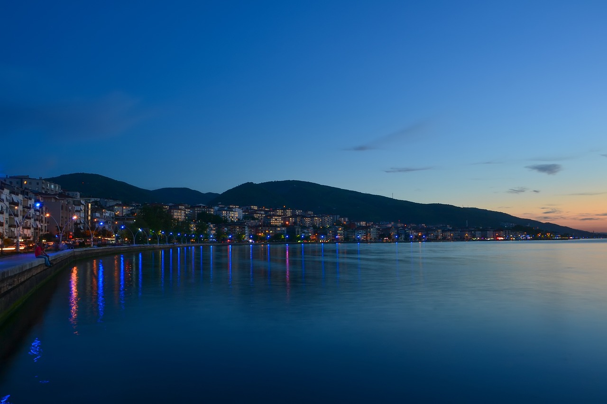
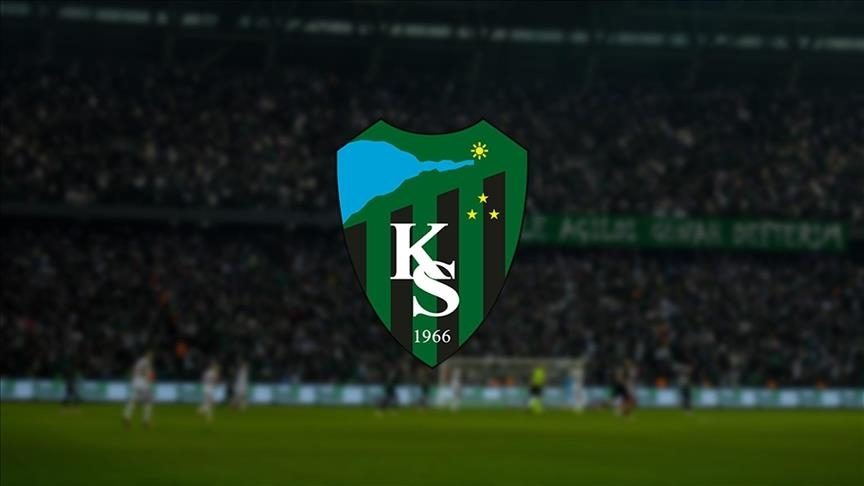

Kocaeli'ye Hoş Geldiniz
Sanayi, doğa ve ulaşım avantajlarının buluştuğu güçlü bir şehir.
Kocaeli, Marmara Bölgesi'nin en güçlü sanayi ve ticaret merkezlerinden biri olarak öne çıkar. Modern şehir yaşamını, ulaşım avantajlarını ve doğal güzellikleri bir arada sunan yapısıyla hem yaşam hem de kariyer planları açısından dikkat çeken bir şehirdir.

İzmit Saat Kulesi, Kocaeli'nin tarihi kimliğini simgeleyen en değerli yapılardan biridir. Şehrin merkezinde konumlanan bu yapı, mimari zarafeti ve kültürel hafızayı temsil eden karakteriyle hem yerel halk hem de ziyaretçiler için güçlü bir sembol niteliği taşır.

Kocaeli'nin spor kültürünü temsil eden Kocaelispor, köklü geçmişi ve güçlü taraftar desteğiyle şehrin en önemli değerlerinden biridir.
| Başlık | Detay |
|---|---|
| Kuruluş Yılı | 1966 |
| Renkler | Yeşil - Siyah |
| Stadyum | Kocaeli Stadyumu |
| Önemli Başarılar | 2 Türkiye Kupası şampiyonluğu ve üst liglerde uzun yıllar rekabetçi performans |
Kocaeli'nin nüfusu 2 milyona yaklaşan dinamik bir yapıya sahiptir. Genç ve çalışabilir nüfus oranı yüksek olduğu için şehir; üretim, teknoloji ve hizmet sektörlerinde sürekli gelişen bir insan kaynağı potansiyeli sunar. Farklı kültürlerden insanları bir araya getiren bu yapı, sosyal hayatı da canlı tutar.
Kocaeli, İstanbul ile Anadolu arasında stratejik bir köprü görevi görür. Marmara Denizi ve Karadeniz'e uzanan coğrafi konumu sayesinde liman, kara yolu ve demir yolu ağlarında kritik bir merkezdir. Bu özellikleri şehri hem lojistik hem de ekonomik açıdan Türkiye'nin önemli noktalarından biri haline getirir.
Aileler ve doğa severler için yürüyüş parkurları, hayvan gözlem alanları ve sakin atmosfer sunar.
Kış turizmi, kayak merkezleri ve doğa manzaralarıyla dört mevsim aktif bir gezi rotasıdır.
Dere kenarı mekanları, yeşil doğası ve huzurlu ortamıyla hafta sonu kaçamakları için idealdir.
Tarihi dokusu ve deniz manzarasıyla Kocaeli'nin kültür mirasını yansıtan önemli bir noktadır.